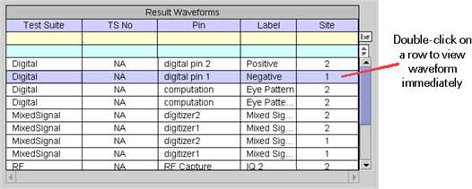

Double-Click a Row
If you double-click a row of the Result Waveforms table, the new graph appears in the Waveform Graphs Tool and displays the specified waveform immediately.

If you double-click a row of the Selected Graph table, all displayed traces in the Waveform Graphs Tool, except for the specified trace, will become non-visible . The waveforms that were not selected in the Selected Graph table will become half transparent, and their corresponding small boxes in the Trace column will become non-visible.